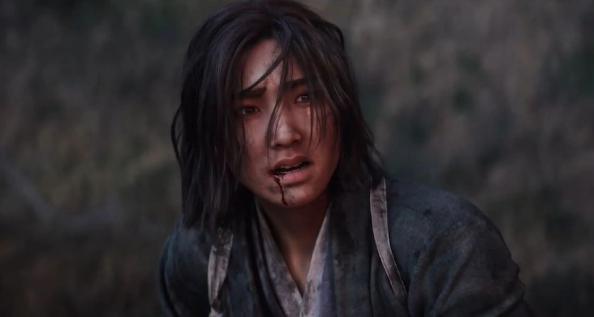
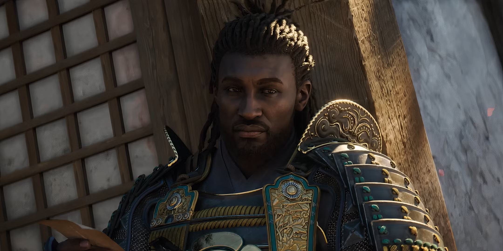
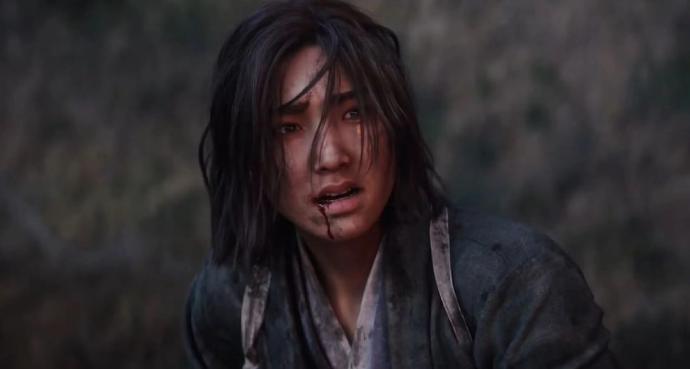
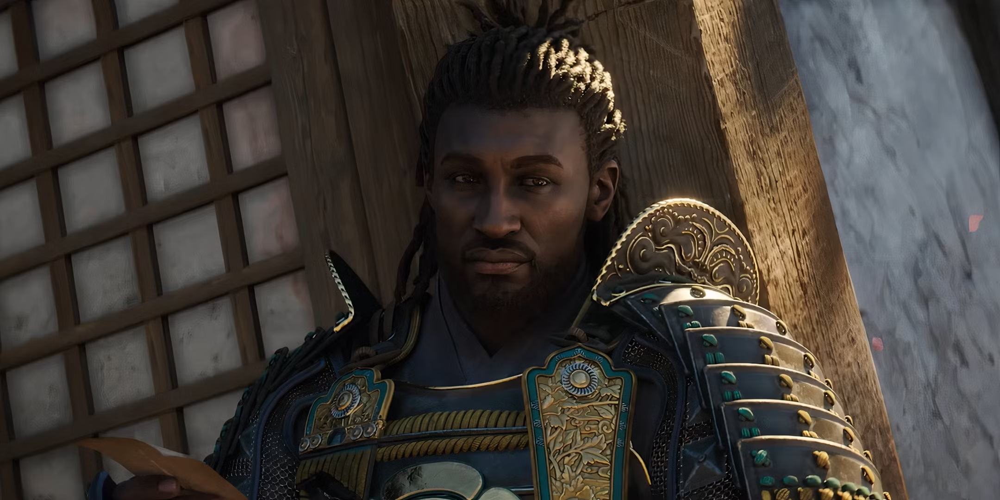

Especificaciones Minimas
- Procesador: AMD Ryzen 5 3600
- RAM: 16GB
- Tarjeta Grafica: AMD Radeon RX 5700
Especificaciones Recomendadas
- Procesador: AMD Ryzen 7 5800
- RAM: 16GB
- Tarjeta Grafica: RX 7900
 



"No esperaba que el sigilo y el parkour se sintieran tan pulidos en este entorno japonés. La ambientación feudal está brutal, y el cambio entre Yasuke y Naoe le da una frescura brutal al gameplay. Siento que Ubisoft por fin volvió a encontrar el equilibrio entre acción y sigilo clásico."
"Visualmente es una locura, pero me costó conectar con el ritmo al principio. El combate con Yasuke es poderoso pero algo lento, mientras que Naoe brilla con las mecánicas de infiltración. Eso sí, explorar castillos y pueblos en esta versión del Japón feudal es una experiencia única."